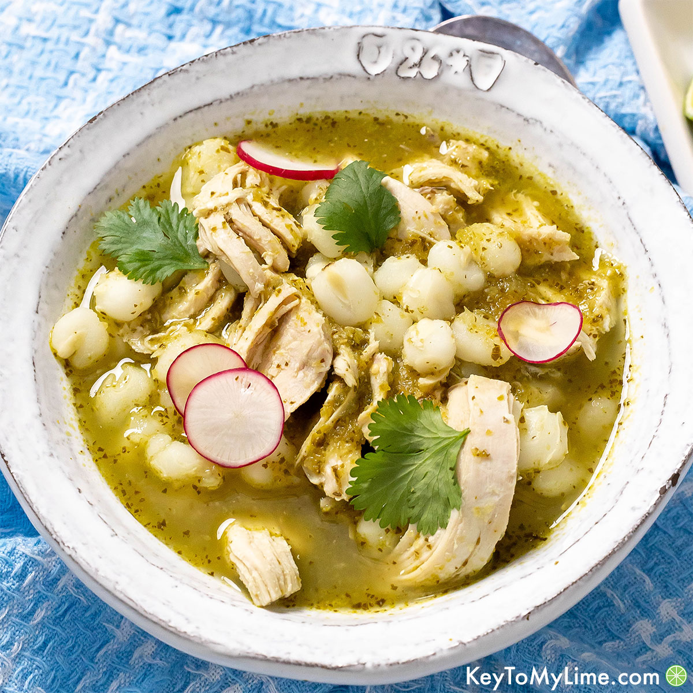
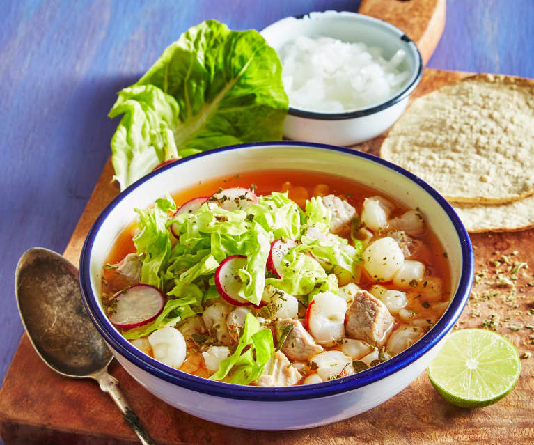

Pozole
Camila Florencio

Pozole Blanco

Pozole Verde

Pozole Rojo
Description
Pozole originated in Mexico, specifically the Nahuas, and now can be served as an everyday meal but also a festive dish. This traditional food dates back to the pre-Columbian era and was eaten by people such as the Aztecs on special occasions because one of its main ingredients is produced from corn.
Pozole can be prepared in many ways but every variation has a base of cooked hominy (dried maize) in broth. This broth is usually made with chicken or pork, but there are vegetarian versions as well. The three main types of pozole are blanco (white), verde (green), and rojo (red). Pozole blanco is the way that does not include any additional green or red sauce. Pozole verde has a rich salsa verde based on green ingredients like tomatillos, epazote, ciltaro, green chiles, or pepitas. Pozole rojo is similar but uses salsa roja made from one or more dried or smoked red chiles, like guajillo, piquin, or ancho, and usually tomato. Pozole is commonly served accompanied by a wide variety of condiments. Common condiments include chopped onion, shredded cabbage, sliced radish, avocado, limes, oregano, tostadas, chicharrón, limes, and chiles. Sometimes, when someone serves you pozole, they will give you Pozole blanco and put the condiments and sauces on the side so you can customize the dish to your liking.
Although pozole was created so long ago, it is still an important part of Mexican culture. In Mexico, it is still typically served on special times like New Year's Eve, but it is also common to serve it on Mexican Independence Day, birthdays, Christmas and other holidays.
Chicken Pozole Verde Recipe
Total time: 1hr 15 mins, Servings: 6-8 servings
Ingredients
- 7 cups chicken stock or low-sodium broth
- 2 cups water
- 4 chicken breast halves on the bone with skin
- 1 pound tomatillos, husked and halved
- 1 small onion, quartered
- 2 poblano chiles, cored, seeded, and quartered
- 2 jalapeños, seeded and quartered
- 4 large garlic cloves, smashed
- 1/2 cup chopped cilantro
- 1 tablespoon oregano leaves
- Kosher salt
- Freshly ground black pepper
- 1 tablespoon vegetable oil
- 3 (15-ounce) cans of hominy, drained
- Finely shredded iceberg lettuce, for serving
- Sliced radishes, for serving
- Chopped onion, for serving
- Diced avocado, for serving
- Sour cream, for serving
- Tortilla chips, for serving
- Lime wedges, for serving
Instructions
- Gather Ingredients
- In a large enameled cast-iron casserole, bring the chicken stock and water to a boil.
- Add the chicken breasts skin side down, cover, and simmer over very low heat until they're tender and cooked through, about 25 minutes.
- Skim and discard any fat from the cooking liquid and set the liquid aside.
- Transfer the chicken breasts to a plate and, once cool enough to handle, shred the meat; discard the bones and skin.
- In a blender, combine the halved tomatillos with the quartered onion, poblanos and jalapeños, smashed garlic, chopped cilantro, and oregano. Pulse until coarsely chopped, scraping down the sides.
- With the machine on, add 1 cup of the cooking liquid and puree until smooth. Season the tomatillo puree with salt and pepper.
- In a large, deep skillet, heat the vegetable oil until shimmering. Add the tomatillo puree and cook over moderate heat, stirring occasionally, until the sauce turns a deep green, about 12 minutes.
- Pour the green sauce into the cooking liquid in the casserole. Add the hominy and bring to a simmer over moderate heat. Add the shredded chicken to the stew, season with salt and pepper, and cook just until heated through.
- Serve the pozole in deep bowls, passing the lettuce, radishes, onion, avocado, sour cream, tortilla chips, and lime wedges at the table.